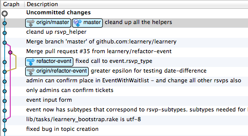
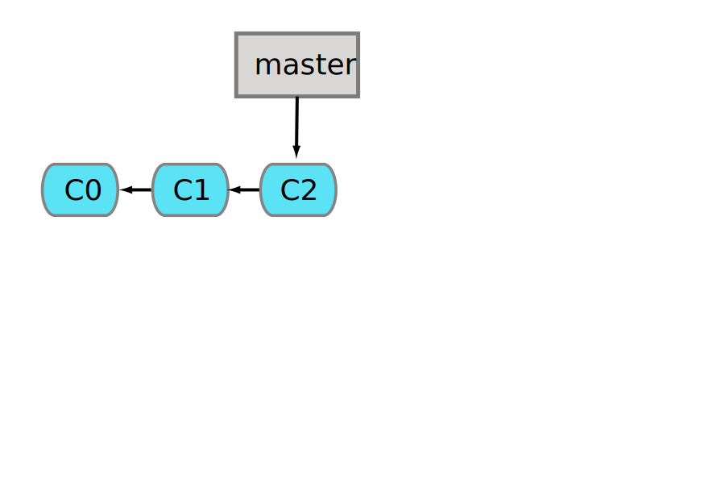
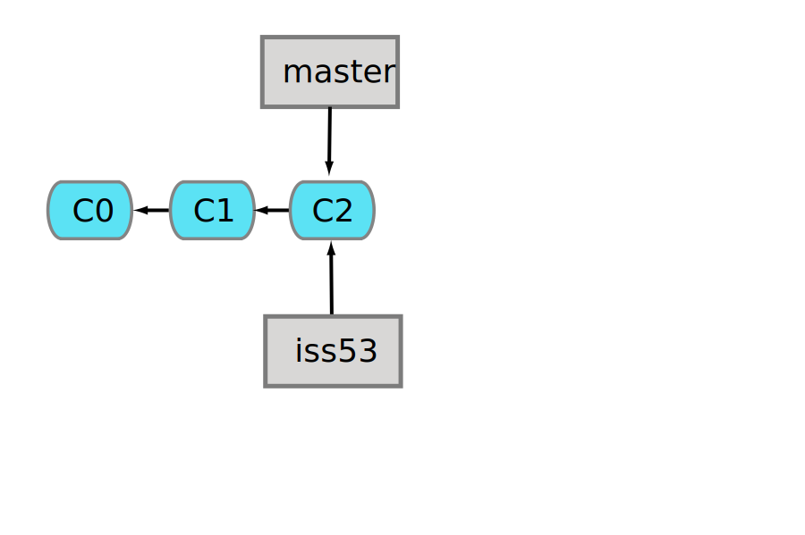
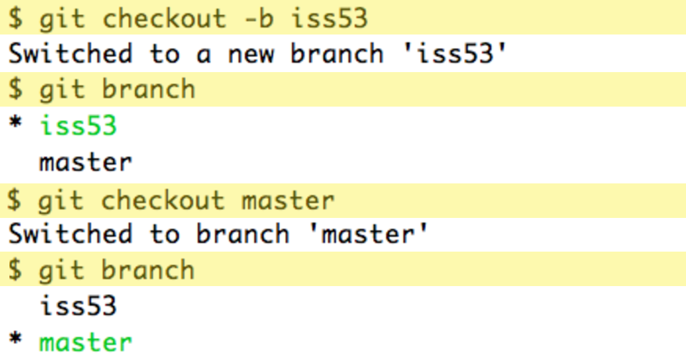
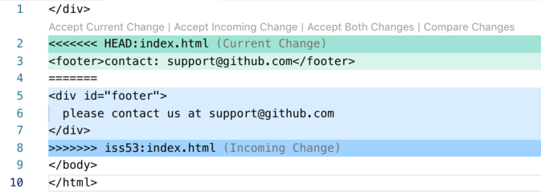

▻
1 How to Branch
When you create a branch in the repository you enable two
different development directions. Later on you might want to
merge the branches again, or you might want to discard one.
Some tools offer visual displays of these branches.
Here is a screenshot from SourceTree:

▻
1.1 Create a branch
To view, create or delete a branch use the branch command.
The current branch will be marked with an asterisk (star):
# show branches
git branch
* master
iss50
# show branches and last commits
git branch -v
* master 7a98805 Merge branch 'iss49'
iss50 782fd34 Fix bug in displaying formerrors
# create a branch
git branch BRANCH_NAME
# delete a branch
git branch -d BRANCH_NAME
Creating and deleting branches in itself does not do anything to
your files and does not change which branch you are on.
One branch is always the current branch. You start out
on the master branch and can switch to another branch
by using checkout:
# switch to a different branch
git checkout BRANCH_NAME
# shortcut: create a new branch + checkout
git checkout -b foo
If this is a new, newly created branch, the files in your
working copy do not change. you can now work in this
branch as usual: add, commit, add, commit.
Now the branch is really different from other branches.
If you check out another branch now you will see the
files in your filesystem change!
Only checkout another branch when your working directory is clean,
after you have commited all changes!
▻
2 Behind the scenes
Git keeps track of all the commits. A branch is
a pointer to a certain commit. To begin with you
only have a master branch, and it points to the most recent commit,
in this figure that is c2:

▻
2.1 create a new branch
A new branch just points to the same commit as the current branch.
In this figure the new branch iss53 (probably created to fix issue 53)
also points to commit c2:

With git checkout you can switch to a different branch -
this will not change the branches in any way:

▻
2.2 work on two different branches
When you continue to work in your project,
and you make new commits to the master branch and the
iss53 branch you may end up in a situation like
in this figure:

Now the content of the two branches is different,
when switching to another branch with git checkout you will
see the files in your working copy change.
▻
3 Merging
The process of combining branches again is called merging.
Git will try to do this automatically, and in many cases this
is not a problem. For example if the two branches changed
different files.
This is the process: you should be on the branch that you
want to continue using, in the example below this is master.
Then you issue the command to merge in the other branch.
If all goes well the output will look like this:
$ git checkout master
$ git merge iss53
Merge made by recursive.
README | 1 +
1 files changed, 1 insertions(+), 0 deletions(-)
After the successfull merge the current branch (master)
contains all the changes from both branches. The other branch
is still unchanged:

You probably do not need the other branch any more and can delete it:
▻
3.1 Conflicts
Merging is not always so easy. When both branches contain changes for the same file
git might not be able to merge them automatically. Then the repository
will be left in an "unmerged" state:
$ git status
index.html: needs merge
# On branch master
# Changed but not updated:
#
# unmerged: index.html
#
The "unmerged" files will contain "conflict markers" to
indicate where git tried to merge but failed. Here a developer
is needed to look at the code and decide which version to keep,
or how to combine the two versions.
Here an example of an "unmerged" html file:
</div>
<<<<<<< HEAD:index.html
<footer>contact: support@github.com</footer>
=======
<div id="footer">
please contact us at support@github.com
</div>
>>>>>>> iss53:index.html
</body>
</html>
If you use an editor with appropriate syntax highlighting
this might be easier to read:

Before deciding how to edit this
you probably also need to look at other files too
- in this example at the CSS files
to find out if the tag footer or the id footer is used.
▻
3.2 how to resolve a conflict
For every file that is marked as "umerged", you need
to edit the file, check if the program still works (run tests?)
and finally: add the file again.
After treating all the file write a commit message that
starts with "MERGE:".
git add index.html
git commit -m 'MERGE: consolidated changes in the footer, using footer-tag from now on'
▻
4 Merge Requests / Pull Requests
When working in a team with git you can use git not only
for the code, but also for discussions around the code,
especially for discussions about what to include and what to change.
The main idea here is the merge request, as show in this
simplified graphics from github:

- When you start working on a new feature, you create a new branch (often called "feature branch")
- you make several commits, until you think your code is ready
- now you push your branch onto the central repository (but not to master yet!)
- now you do a "merge request" (gitlab) or "pull request" (github)
- you teammates can look at your code and write comments
- you can do new commits
- after a consensus is reached, the branch is merged into master
git flow is githubs explanation of this workflow:
github flow
▻
4.1 When a merge request can't be merged
You might run into trouble when the master has moved on from the position where you
created your branch.
Then you need to
- get the current version of master by switching to master
git checkout master and pulling in the newest commits git pull origin master
- merge these newest commits into your branch by switching to your branch
git checkout YOUR_BRANCH and git merge master and solving any conflicts
- pushing this new version up to the server with
git push origin YOUR_BRANCH